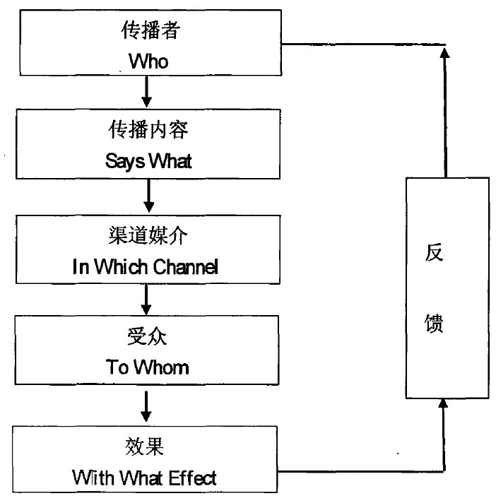
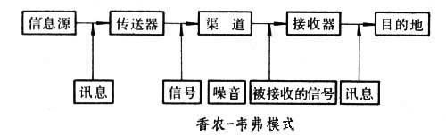
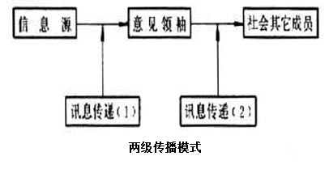
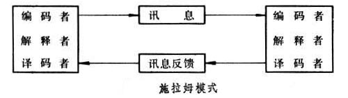
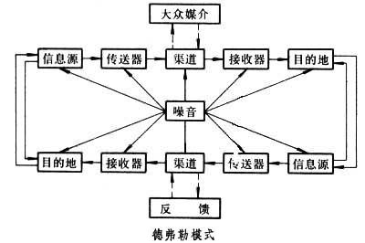
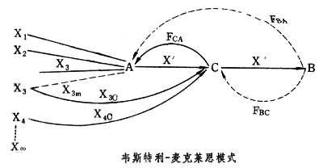
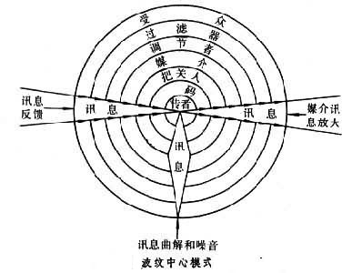

信息流行病指的是，在此次新冠肺炎疫情爆发期间，线上线下过多的信息——有些准确有些不准确，使得人们在有需要时难以找到可信赖的消息源和可靠的指导。——百度百科
Infodemic即Informatics（信息） + Epidemic（流行病），也称信息疫情。指在当前互联网高度发达的社会背景下，重大公共安全事件的发生往往导致信息的爆炸式增长和病毒式传播，由于缺乏有效的甄别机制，导致传播的信息内容往往参差不齐，\(\color{red}{让人们难以分辨真正值得信任的信息}\)，其中消极的、错误的、负面的信息往往容易对个体造成消极的影响。
传播模式是指研究传播过程、性质、效果的公式。20世纪20年代以来，西方传播学研究中出现了反映不同观点和不同研究方法的多种模式，但没有一个被普遍接受的模式。早期多为单向线性模式，50年代以来普遍强调传播是双向循环过程。 ——百度百科
“5W”模式 
香农-韦弗模式

两级传播模式

施拉姆模式

德弗勒模式

韦斯特利-麦克莱恩式

波纹中心模式

| Type | Introduction | Evaluation |
|---|---|---|
| “5W”模式 | 将传播活动解释为由传播者、传播内容、传播渠道、传播对象和传播效果五个环节和要素构成 | “5W”模式概括性强，但它一开始被提出时忽略了“反馈”传播因素，有局限性 |
| 香农-韦弗模式 | 将人际传播过程看作单向的机械系统,模式中的“噪音”表明了传播过程的复杂性 | 噪音”不仅仅限于“渠道”，有局限性 |
| 两级传播模式 | 综合了大众传播和人际传播,强调“舆论领袖”的作用 | 夸大了“舆论领袖”的作用及其对大众传播媒介的依赖性，把传播过程简单化了 |
| 施拉姆模式 | 强调传者和受传者的同一性及其处理信息的过程，揭示了符号互动在传播中的作用 | / |
| 德弗勒模式 | 在闭路循环传播系统中，受传者既是信息的接收者，也是信息的传送者，噪音可以出现于传播过程中的各个环节 | 此模式突出双向性，被认为是描绘大众传播过程的一个比较完整的模式 |
| 韦斯特利-麦克莱恩式 | 此模式在突出信息的同时,特别强调把关人在大众传播中的作用 | / |
| 波纹中心模式 | 强调大众传播同社会、文化等的关系，显示了传播过程的复杂性和动态性 | / |
| 一致性模式 | 传播效果往往取决于传播内容对受传者固有信仰、观点、态度的威胁或强化程度 | / |